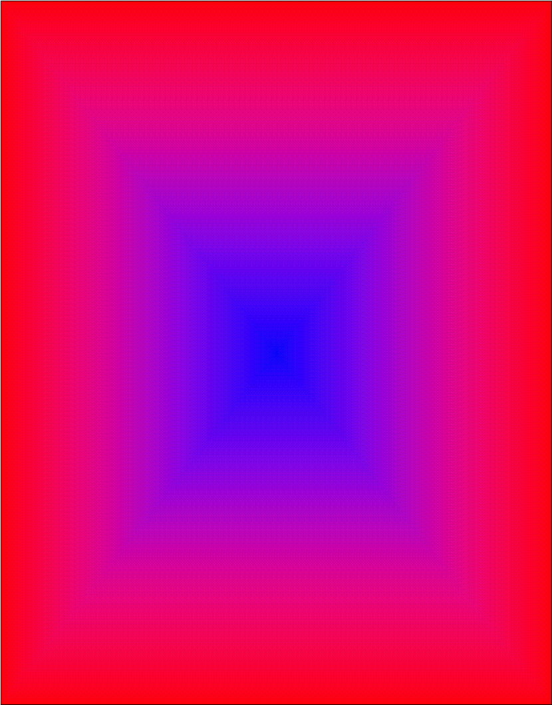

Well there is So much to copy and paste here.
BUT since basically what I wrote was coming off the pop of my head WHEN I was
not capable to intend or want Please, IF you recorn
to be mentioned (although the names will be somewhat encrypted) just ignore any
comments.
Slayer Gatsu
22 march 2005
Ok, thanks to nobun, I came up with the idea that putting a triggerall in the command file would have stopped the nasty
repeating of the move when striking the same key over and over. It perfectly
worked. If it wasn't for nobun I would have never
gained the idea of such a try. Thanks NOBUN!
I just thought how
wonderful it would be to screw Sam and make a saint seya
armor to use as a explod to
make him freak out! The armor will probably be done by someone else; I haven’t
got enough time to draw 100 sprites again! By now, gill is almost perfect. it doesn’t have a
single error message in the debug mode, one thing needs to be fixed though, I really don't know were to look for!
Anyway now the intros have been completed and tested. Gill is looking awesome.
Holly shit! The
text got deleted! Now you'll never know what happened in these 5 days!
To tell the short
story, I timed the hideous animations of the intro, it took a lot! The sprites
didn’t mach, but I made them much! ^^ believe me, it was an
hard task.
The sounds have
been added, but a bug is bugging me... no dying sound! Now I’ll fix it...
Well well well, someone is making gill
now I will program no stop for 3 days in order to finish him.
guys, all the
world, I’m sorry for the huge delay in the beta it was supposed to be
yesterday, but life called, during the 3 day weekend I was dragged to Las Vegas
by my parents, but now, the 4 day after the previous paragraph programmed the pyirocinesi, and yes, I made and programmed the cryochinesi! Is working perfectly on the other side!
by doing that I
just got how to make gill's other side, even though mas-x2475-u says it is
impossible I got the idea and the way to make it!, too bad I will need to
override the common1 well who cares anyways! We will have a double sided gill!
the resurrection is coming along.... is hard but if I find a way to keep the
round open in that and only that situation gill will resurrect! now though I
cant program for a bit...I need to study chemistry, my A needs to be maintained
and I have a quiz tomorrow, reactions & products, I barley opened a book
conceding myself to gill, well I’ll be back tomorrow, that is if I got a B on
the quiz of course!
hahahahah the test was easy... I
probably failed @L@ hahahahah I’m the god of
programming, now there is nothing I can't do! I just made gill have the side switch
of the standing state 0 ahahahahahahahhaahhaha lot's
of people told that was impossible ahahahahahahahahahah
ghghghghghgh who am I? I asked Sam.... I didn’t
reply, but the answer was meant to be God....I’ll be back before tonight to
tell about the rest of the basic turning stuff!
I was never back
but gill had a turning side with out turning, I placed all sparks and various
crap and is really good looking, now I’ll get back to work, I’m making the rest
of the other side...I got stance, jump, crouch, parry and working.... now I'm
doing the win and lose stuff after that comes the intro, and after that comes
the first set of attacks the standing punches...see ya
world, I’ll be back this time Maybe...ups didn't say walking... guess you imagined!
neither I said
dashing...anyways, I didn’t do the getting hit part, but all the attacks done
so far with relative sparks and stuff no turning yet, is giving lots of problems
due to un unfixable bug I had to erase the turning I made for the "Coming
out of the jump" part.. too bad, it was not too good anyways...I’ll get
started with the boring getting hit part, I should probably do my math though, I
have to give a hw packet in tomorrow, I got to do English too3 assignments all
in one hour, the rest I’m working on Gill anyways, I’m coming out of my head by
now, i guess i will delay
the beta again, I’m just to tired! But continuing like this no beta would be released;
I could go directly to the final product! almost there... problems with the
reverse falling, gill gets stuck in the lay state, this I have to fix, be back,
maybe, later
Yes, yes is delay
of 2 weeks, but no one knows about Gill’s creation anyways! Well then, now I
got a chunkast and the street fighter game, I’m not
going blind Anymore! Now that I can see, I’m changing about anything I have
done until now...all the moves and the damage and a whole lot of little
things...I just finished the base attacks now, I still miss only one thing, the
true hit sparks they will come as soon as I finish the stuff for the chsee, (I never opened a book to study that crap!) and now I
would like to at least read it once before getting into the test!... What? I
know, screw school gill is better... finish him...well I wish I could, I’m
about done, all I need now is a review of the pyro cryo comets e seraphic along with some fixes to make to the
head butt (of which now I Know the real hit parks) and of the jumping acrobatic
that hits you with the knee (That one is programmed only in a minimum way, 1
possibility out of 20, I guess It will take some time), ok to the books now,
see ya everyone
Ok so what? is a
lot I know, 1 week more....well I’m done now, I declare gill 99.8% completed tomorrow
will come the official release on mugenation, now I’m
making everything look pretty, and believe me, is an hard job! Gill works, one
bug I found I’m not yet able to fix, but is minor, rare and obsolete, I doubt
that anyone would complain, all though I care and over the time I’ll find and
work a fix for it. Well, Sam is of to
Ok I’m Done for
now, I’ll send it to the beta testers for 6 hours of testing, Be back later
He... yes, gill is born as bug free, or almost, basically all the bugs are fixed with version 001B, only of beta tester use...I still miss some sprites... As soon as I get those I’m set... version 1.00B and release, but if you are reading this you have to have the char! Therefore I finished within the week!
TODAY;
Gee now looking at this, just glancing it… it really shocks me…
Well from the last paragraph I had written 2 months have passed. Yes it’s true gill was born bug free, BUT he is born TODAY, not before. From that day, long lost time forgotten by the mind Everything has changed AGAIN. The character now has 3 supers (the resurrection) WHICH I found was known and used in the same way I discovered trough careful study of the docs. Most important thing is what came of the sff file. In fact the old sff file was rather crappy and it looked wrong IMHO, therefore I RECOMPILED it, I stared from the palette, carefully and rigorously made by hand, and changed the different the colors of the “need-to-be-different” body parts, This is why you are able to see the teeth any when and in all the palette situations. Then the AI that is another great step forward. The AI was carefully planned to b e Hard at its maximum level, However Extra powerful chars are able to beat Gill not the common KFM like characters can. Palettes have been added thanks to the change in the pcx files and the palette. A blinking feature to match the original annoying gill has been added and it can be chosen only by the CPU. Many more things are not even worth saying, I wonder How-may will ever read this file anyway… so I’l just stop here an now.
Btw the other guy which was supposed to be making gill was A Fake! Nothing came out of it. No-one knows anything, I hope that someday he’ll publish it so that the Users will decide WHICH one is better B) to me there is no question already.
.